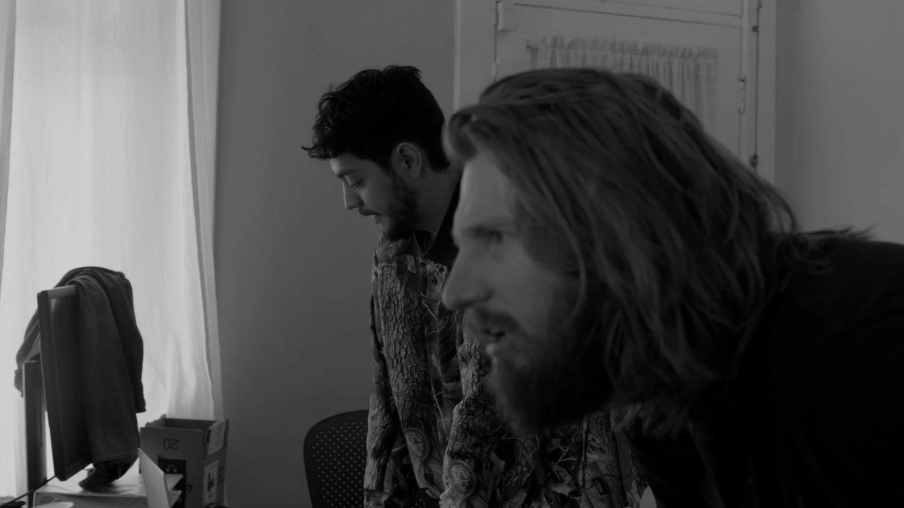
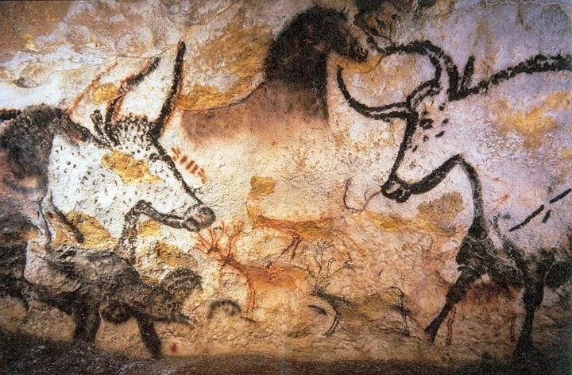

An interview with Parker Corey on Nightgame. Few films today fit the mold of what used to be called a city symphony, and even fewer would dare to extend what such a sub-genre would entail in today's world. .....

Lascaux painting, February 2006 — Prof saxx, Wikimedia Commons, CC BY-SA 3.0
The animal in Rilke dwells within space. Here I will designate the Open as a lived field, a world neither cut off from the being that moves through it, nor reduced to an object by a gaze that turns back upon itself. Humans, by contrast, are a reflection of the world; a world itself reversed by a monotheistic god who turns humanity back toward himself. .....